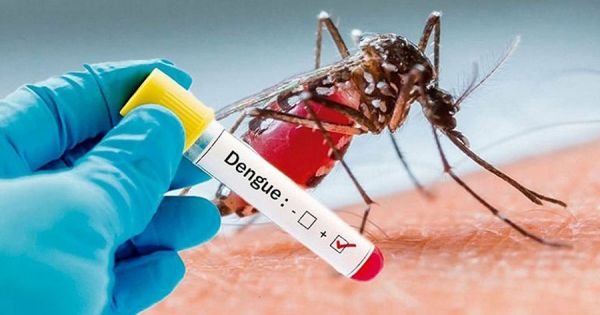

Dengue fever is a disease caused by the dengue virus which is transmitted to humans via the bite of an infective mosquito. There are four different serotypes of dengue virus (DENV1-4) circulating in the world, including Singapore. Hence, individuals can be infected with dengue up to four times.
First-time dengue infections can be severe, especially among the elderly and those with pre-existing medical conditions, and repeat dengue infections have been associated with a higher occurrence of severe dengue. Dengue haemorrhagic fever and dengue shock syndrome can be fatal.
In rare cases, dengue fever may progress to dengue hemorrhagic fever. These are severe forms of the infection that can result in death. Symptoms of severe dengue may include:
Dengue hemorrhagic fever can cause Dengue shock syndrome where the blood pressure falls below 20mmHg along with collapse of peripheral vascular blood vessels.
Pregnant women with this disease are also at a risk of miscarriage.
These usually develop after the start of recovery from the initial infection.
| Symptoms of dengue fever |
|---|
| Sudden onset of fever for 2-7 days |
| Severe headache with pain behind the eyes |
| Joint and muscle pain |
| Skin rashes |
| Nausea and vomiting |
| Mild bleeding (e.g. nose or gum bleed, or easy bruising of the Symptoms usually appear 4-7 days after being bitten (ranges from 3-14 days). |
| Risk of dengue fever | Reason that could cause fatal: |
|---|---|
| Potentially developing into hemorrhagic fever resulting: | |
| Decreased number of platelets | |
| More severe bleeding problem | |
| Plasma Leakage | |
| Dengue shock syndrome | |
| Pregnant women at risk of miscarriage |